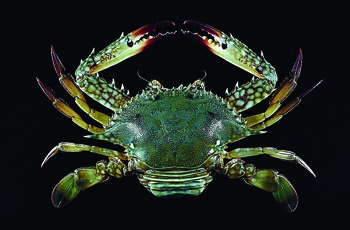
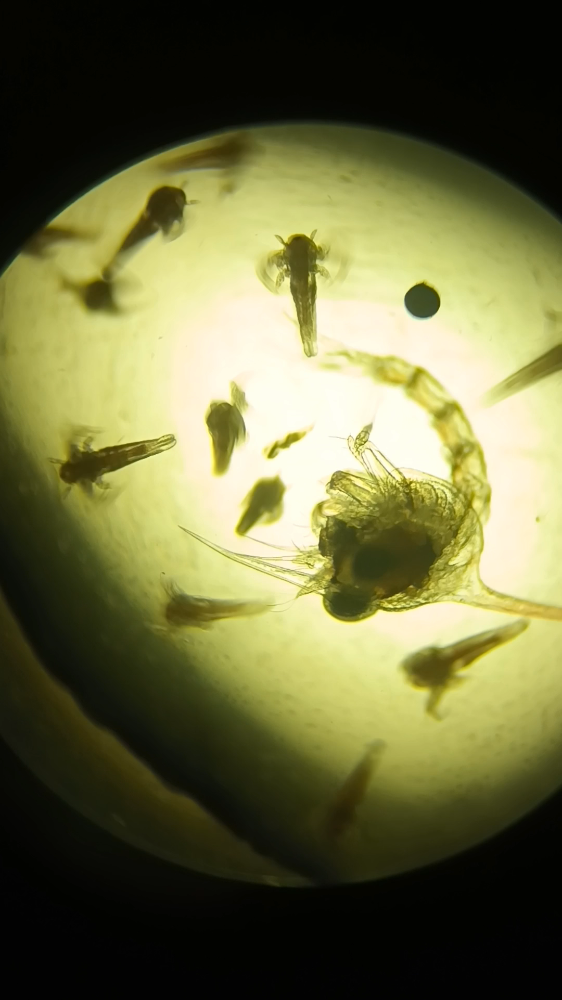
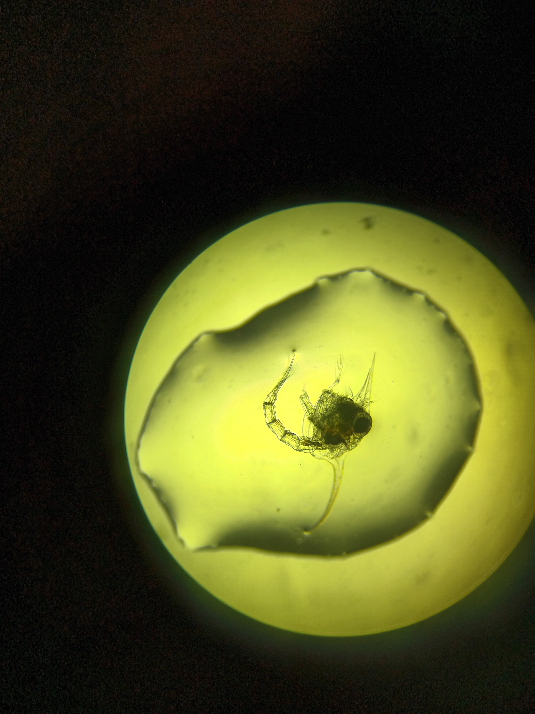
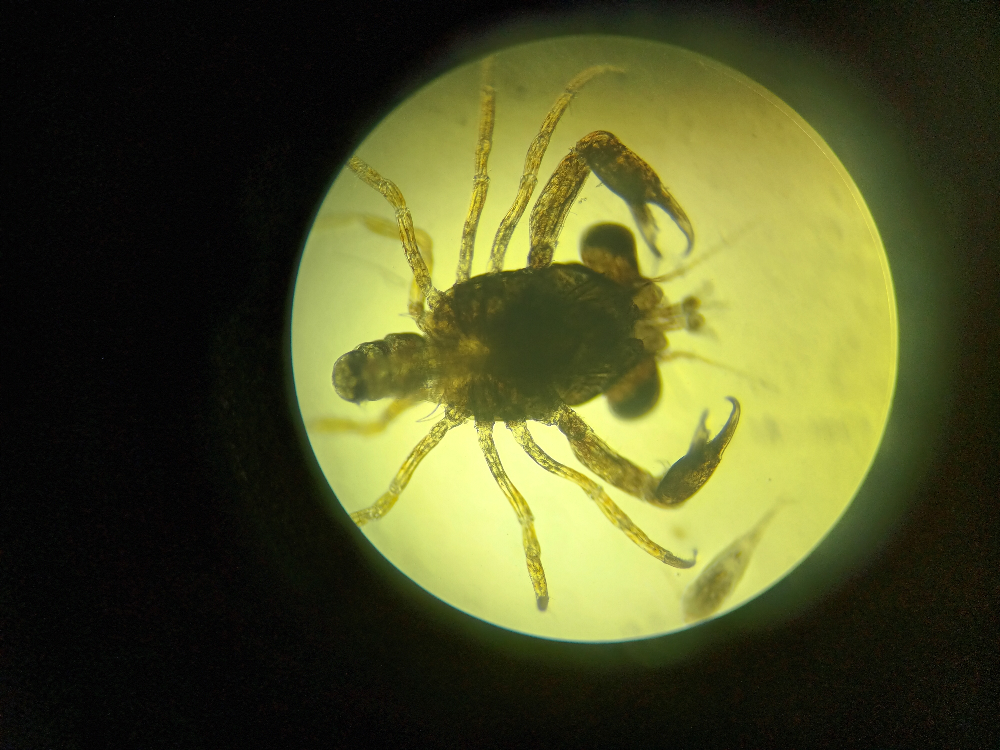
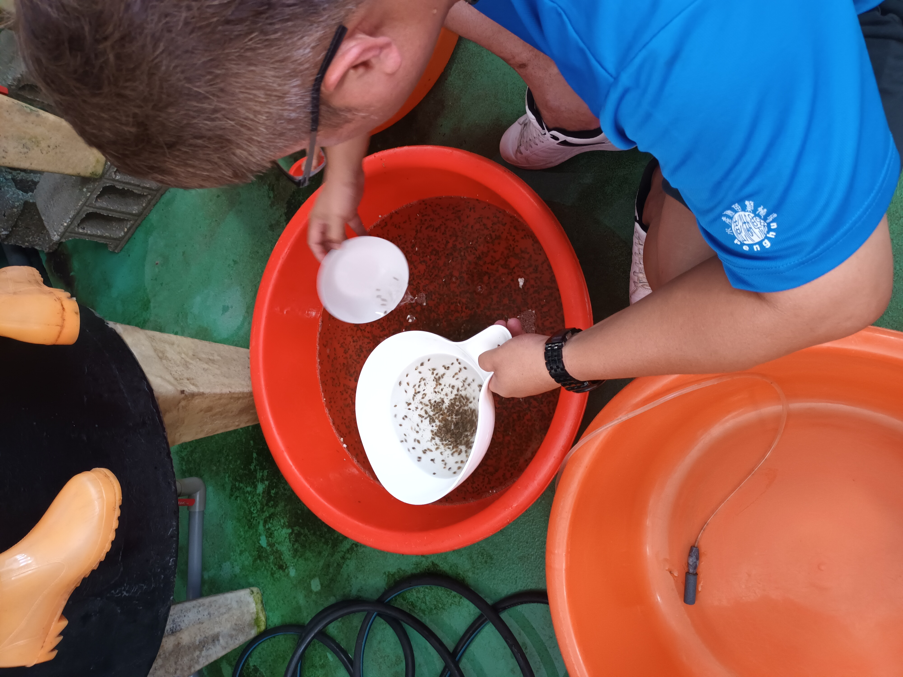
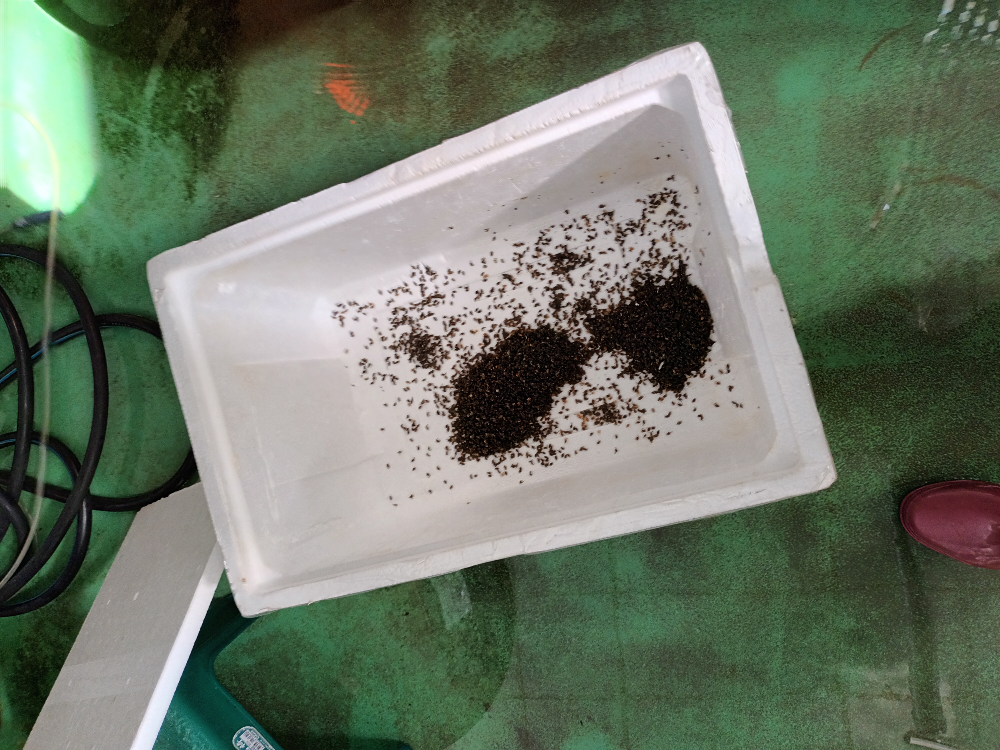
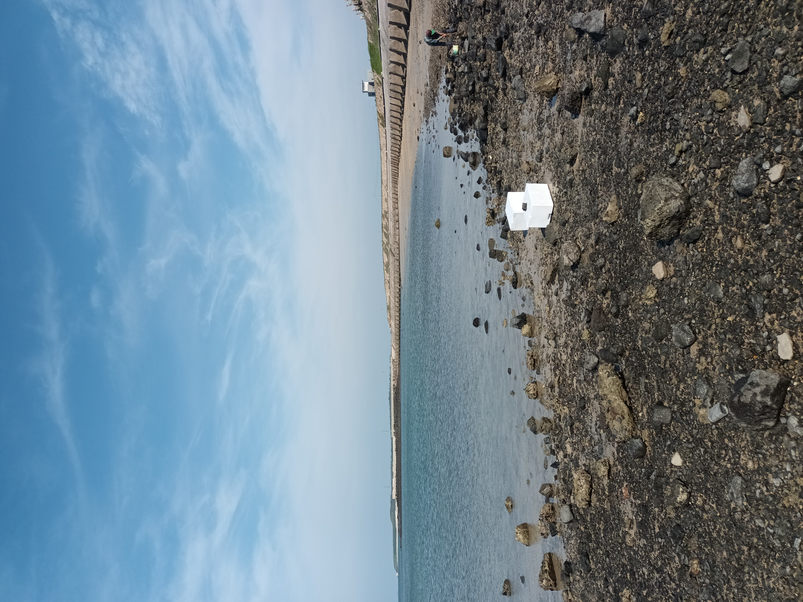

國立臺灣海洋大學水產養殖學系大二下暑期實習，地點在澎湖縣水產種苗繁殖場（公家機構），任務分配在螺蟹組，物種是遠海梭子蟹 Portunus pelagicus。實習期間從受精卵培養到稚蟹放流，12 天完整週期，放流到澎湖海域海草床合計 14,531 隻。校內結報於 2023 年 12 月完成。

# 實習任務與物種
- 機構 — 澎湖縣水產種苗繁殖場
- 學系 — 國立臺灣海洋大學 水產養殖學系
- 組別 — 螺蟹組
- 物種 — 遠海梭子蟹 Portunus pelagicus（梭子蟹科 Portunidae，俗名 sand crab / blue swimmer crab）
- 棲息環境 — 印度及西太平洋海域，潮間帶至水深 50 公尺，沙泥底，具潛沙習性
- 產卵特性 — 精子在母蟹體內越冬，交配與越冬時遷移至深水區
# 蟹苗三階段培養
從受精卵到可放流的稚蟹，遠海梭子蟹經歷三個關鍵變態階段，每階段對應不同的飼料、換水節奏、附著結構：
| 階段 | 基本作業 | 投餵 | 其他 |
|---|---|---|---|
| 卵 | 藻水預處理（打氣觀察藻色變化） | — | — |
| Zoea 蚤狀幼體 |
後期換水 | 輪蟲、豐年蝦 | — |
| Megalopa 大眼幼蟲 |
換水 | 豐年蝦、解凍橈腳類、解凍糠蝦 | 紗網、攀附網 |
| 稚蟹 Juvenile |
換水 | 解凍橈腳類、解凍糠蝦 | 紗網、攀附網 |
# 鏡檢：40x 顯微鏡下的三階段對照
培養期間每日取 A3、A4、A6 池樣本，40 倍鏡檢追蹤變態進度，紀錄拍攝範圍從 Day1 Zoea 到 Day12 稚蟹。三張對照圖呈現同一物種跨 12 天的形態變化：



A6 池 Day12 樣本拍到「大眼幼蟲轉稚蟹」的同一隻體三視角（腹部 / 背部 / 殼），是這次培養期內最完整的變態紀錄。Zoea 階段以心跳與活動狀態判斷個體存活，影片紀錄補上靜態圖無法呈現的動態資訊。
# 放流：8/3 A5 室外池 14,531 隻
8 月 3 日 A5 室外池稚蟹達放流規格，整池作業分三步：
- Step 1 — 點蟹：A 池 / B 池分別樣本計數，用取樣比例反推全池總數。
- Step 2 — 裝箱：控制水溫、加入緩衝介質防碰撞，從繁殖場運送至放流點。
- Step 3 — 放流：選定海草床海域，沿海草叢分散釋放，給稚蟹立即可用的庇護結構。
點蟹計算過程（取自當日放流紀錄）：
A 池: 459 × 19.5 ≈ 8,950.5
B 池: 279 × 20 ≈ 5,580
合計: ≈ 14,531 隻


# 跨科分類：蟹 / 蠘 / 蟳
校內結報整理三個常被混用的中文俗名對照，避免田野記錄時誤標。三者皆屬十足目短尾下目，差異在螯足形狀、毛被、棲息環境：
| 項目 | 蟹 | 蠘（梭子蟹） | 蟳 |
|---|---|---|---|
| 代表物種 | Platyeriocheir formosa 臺灣扁絨螯蟹 |
Portunus pelagicus 遠海梭子蟹 |
Charybdis feriatus 鏽斑蟳 |
| 所屬科 | 弓蟹科 Varunidae | 梭子蟹科 Portunidae（6 亞科 35 屬 300 種） | 梭子蟹科 Portunidae（蟳屬 Charybdis） |
| 螯足 | 大螯 + 小螯 | 較小細長、有鋸齒 | 強大螯足 |
| 活動方式 | 步足行走、游泳 | 步足行走、游泳 | 步足行走、游泳 |
| 生活環境 | 淡水、陸地、海水 | 海水 | 海水 |
| 螯足毛被 | 大螯可能有毛 | 無毛 | 無毛 |
# 量化成果
- 放流規模 — 8/3 單日 A5 室外池放流 14,531 隻稚蟹至澎湖海草床海域
- 培養週期 — Day1 ~ Day12 完整變態週期紀錄（Zoea → Megalopa → 稚蟹）
- 鏡檢樣本 — A3 / A4 / A6 池逐日 40x 鏡檢，含同隻體三視角（腹部 / 背部 / 殼）轉稚蟹紀錄
- 產出文件 — 期中報告（2023.08.19、2023.08.22）+ 校內結報（2023.12.29）
- 跨科對照 — 蟹 / 蠘 / 蟳三類俗名物種分類整理